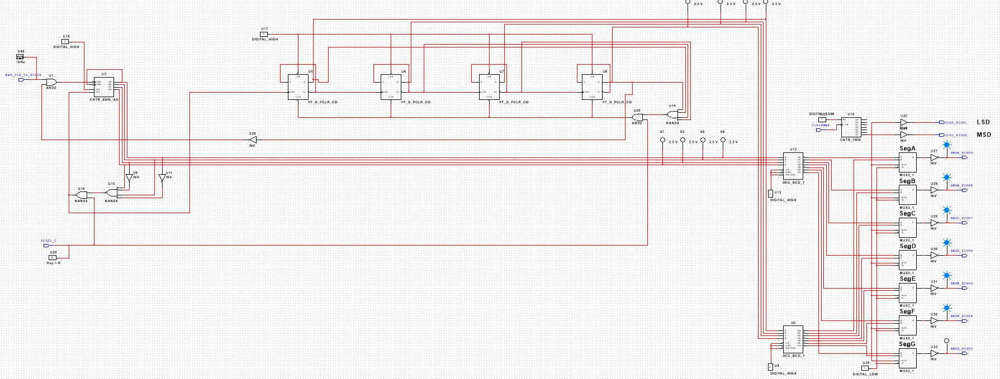

Design Process
Project Overview

NI MultiSim Circuit

PLD Circuit

Breadboard Circuit

Bill of Materials
This is the list of all the components used in the simplified circuit on a breadboard.
| Component | Quantity |
| 74LS08 2-input AND Gate | 1 |
| 74LS32 2-input OR Gate | 1 |
| 74LS74 D-Flip-Flop | 1 |
| 5.2K Ohm Resistor | 3 |
| Buzzer | 1 |
| Wires | About 25 |
Conclusion
This project used a flip-flop to hold the signal of the jam to keep the buzzer on continuously. It used a combination of sensors, boolean logic, and output devices such as a buzzer to alert a user of a copier jam. This circuit could be very helpful in copiers to identify the source of the jam. I learned how to use clocks and flip-flops, how flip-flops work, along with how to wire photoresistors. This circuit is ethical as it is intended to solve copier jam issues.